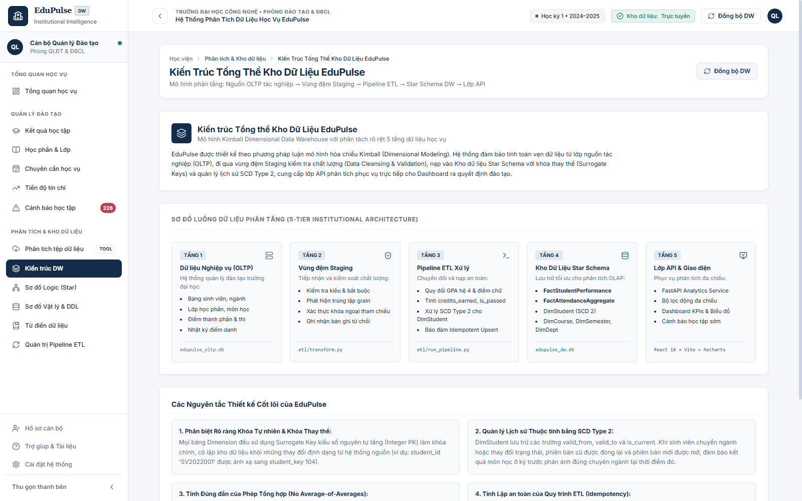
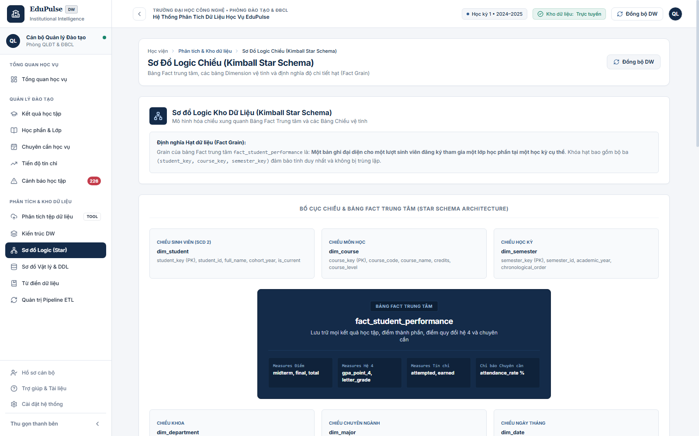
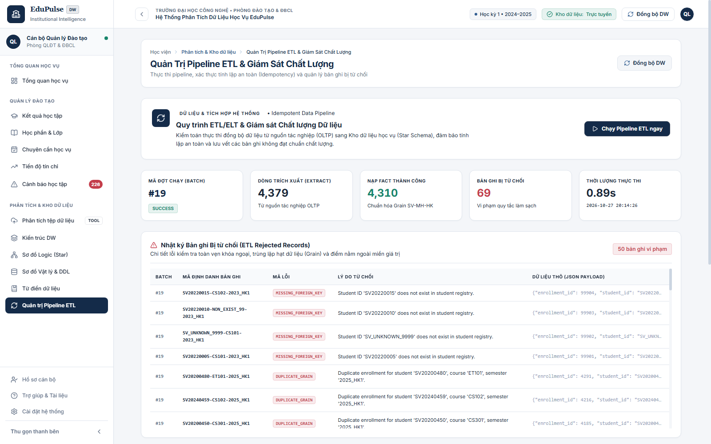
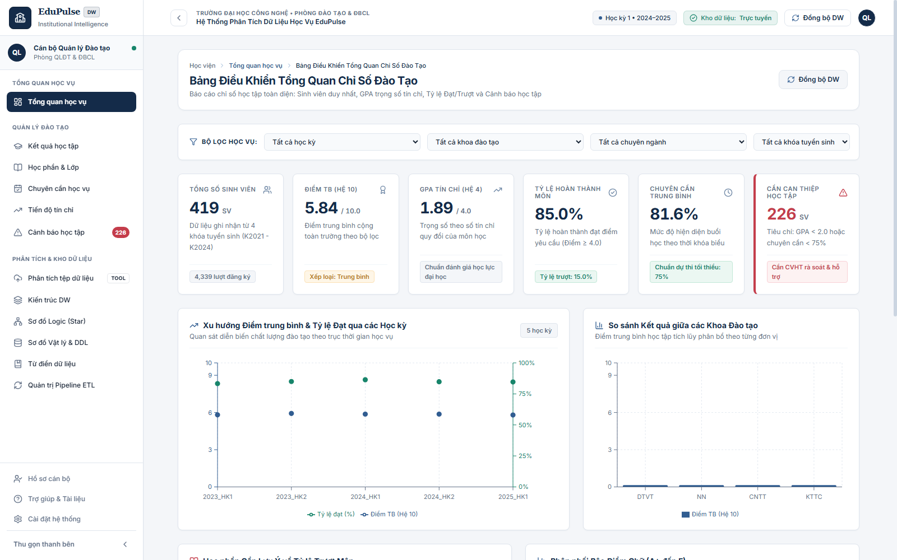
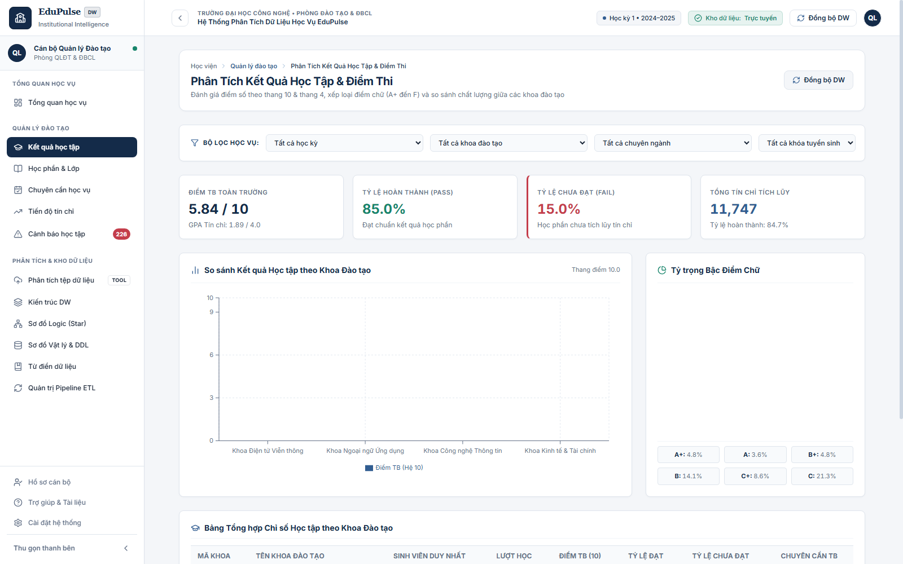
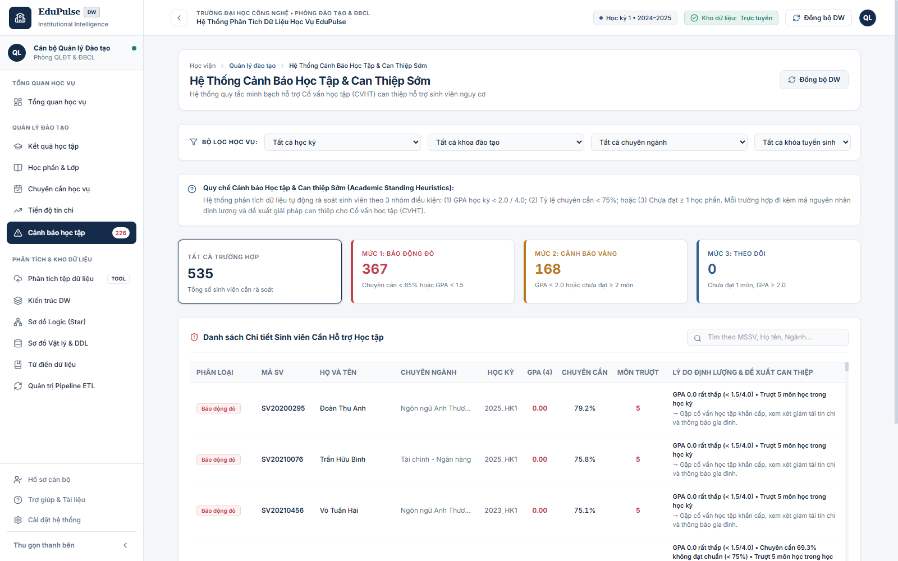
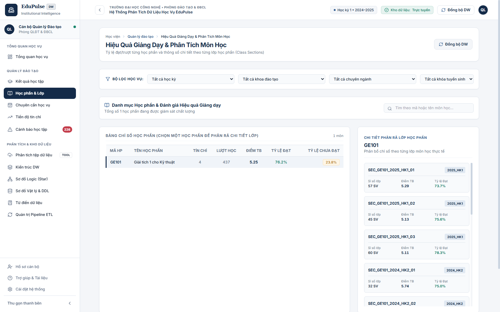
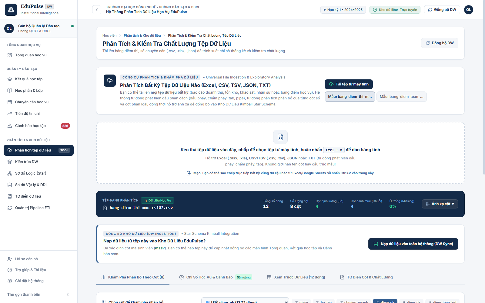
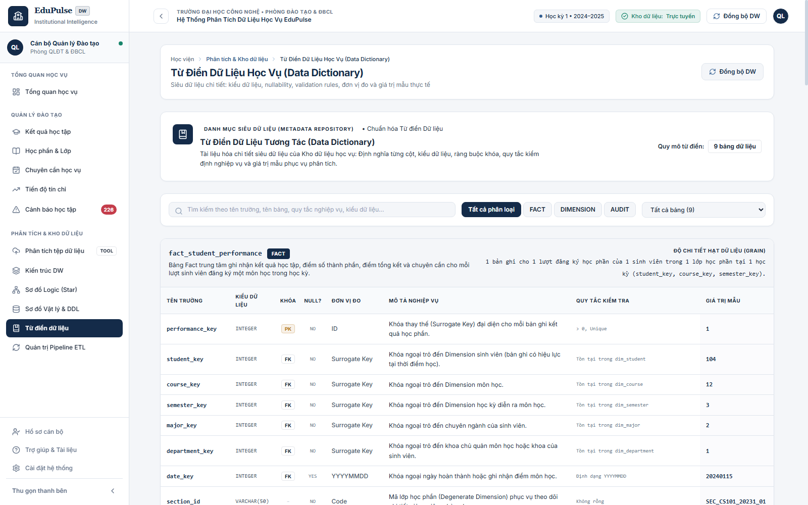

ĐỒ ÁN MÔN HỌC KHO DỮ LIỆU & KINH DOANH THÔNG MINH (DATA WAREHOUSE & BI)
Học Phần Chuyên Ngành Khoa Học Dữ Liệu / Công Nghệ Thông Tin
Nền tảng phân tích hiệu quả đào tạo và kho dữ liệu học vụ đại học. Tích hợp đầy đủ mô hình dữ liệu chiều Star Schema (Kimball), quản trị biến động SCD Type 2, đường ống ETL kiểm soát chất lượng 7 lớp và hệ thống cảnh báo sớm học tập.
EduPulse là nền tảng Phân tích Hiệu quả Đào tạo và Kho Dữ Liệu Học Vụ (Student Learning Analytics & Data Warehouse) phục vụ đồ án môn Kho Dữ Liệu (Data Warehouse & BI). Khác biệt hoàn toàn với các phần mềm quản lý sinh viên CRUD thông thường, EduPulse được thiết kế tập trung vào:
Hệ thống có thể chạy trên mọi máy tính cá nhân sử dụng hệ điều hành Windows, macOS hoặc Linux:
| Thành phần | Yêu cầu tối thiểu | Khuyến nghị |
|---|---|---|
| Hệ điều hành | Windows 10/11, macOS 12+, Ubuntu 20.04+ | Windows 11 (64-bit) |
| Môi trường Python | Python 3.9 (đã tích hợp vào PATH) | Python 3.11 |
| Môi trường Node.js | Node.js 18.x kèm npm 9.x | Node.js 20.x LTS |
| Bộ nhớ RAM | Tối thiểu 4 GB RAM | 8 GB RAM trở lên |
Hệ thống đã được đóng gói cơ chế tự động phục hồi và cài đặt thông qua tệp điều phối trung tâm start.py và tệp kích hoạt nhanh start_all.bat:
Edupulse vào ổ đĩa bất kỳ.
start_all.bat.python start.pystart.py sẽ tự động:
fastapi, uvicorn, pandas, sqlalchemy...), nếu máy tính còn thiếu sẽ tự động chạy pip install -r backend/requirements.txt.frontend/node_modules, nếu chưa có sẽ tự động gọi npm install.database/edupulse_dw.db, nếu thiếu sẽ tự kích hoạt sinh dữ liệu và nạp ETL tức thì.| Dịch vụ | Giao thức / URL | Chức năng chính |
|---|---|---|
| Giao Diện Web UI | http://localhost:5173 |
Bảng điều khiển học vụ, biểu đồ trực quan, tra cứu và kiểm toán |
| Tài Liệu Backend API | http://127.0.0.1:8000/docs |
Swagger UI tương tác 11 RESTful endpoints chuẩn OpenAPI 3.0 |
| Cloudflare Public Tunnel | https://*.trycloudflare.com |
Đường dẫn công khai trực tuyến chia sẻ cho giảng viên chấm thi từ xa |
EduPulse tuân thủ nghiêm ngặt mô hình kiến trúc kho dữ liệu doanh nghiệp phân tách rành mạch giữa tác nghiệp (OLTP) và phân tích (OLAP):

departments, majors, students, courses, semesters, class_sections, enrollments, attendance_logs).
fact_student_performance đại diện chính xác cho kết quả của một lượt sinh viên đăng ký tham gia một học phần trong một học kỳ cụ thể. Được ràng buộc bảo vệ toàn vẹn bằng chỉ mục duy nhất (Unique Composite Index):
CREATE UNIQUE INDEX idx_fsp_grain ON fact_student_performance(student_key, course_key, semester_key);| Tên Measure | Kiểu dữ liệu | Phân loại theo Kimball | Quy tắc tính toán tổng hợp |
|---|---|---|---|
credits_attempted |
INTEGER | Additive | Cộng dồn tự do trên mọi chiều: SUM(credits_attempted) |
credits_earned |
INTEGER | Additive | Số tín chỉ đạt (bằng credits_attempted nếu is_passed=1, ngược lại 0) |
total_score |
REAL | Semi-Additive | Điểm thang 10. Không cộng dồn; chỉ tính trung bình theo trọng số |
gpa_point_4 |
REAL | Semi-Additive | Điểm thang 4 (A=4, B=3, C=2, D=1, F=0). Tính GPA trọng số tín chỉ |
attendance_rate |
REAL | Semi-Additive | Tỷ lệ chuyên cần (0-100%). Tính trung bình theo sinh viên/môn |
is_passed |
INTEGER | Non-Additive | Cờ nhị phân (1=Đạt nếu total_score ≥ 4.0; 0=Trượt). Không thể SUM làm tỷ lệ |
Trong môi trường giáo dục đại học, sinh viên thường xuyên có các biến động: chuyển ngành đào tạo (từ Kỹ thuật Phần mềm sang Khoa học Dữ liệu), bảo lưu, thôi học hoặc tốt nghiệp. Nếu áp dụng SCD Type 1 (ghi đè), kết quả các môn sinh viên học tại ngành cũ trong các năm trước sẽ bị quy kết nhầm lẫn sang ngành mới, làm sai lệch báo cáo lịch sử.
EduPulse áp dụng SCD Type 2 trên bảng dim_student:
CREATE TABLE dim_student (
student_key INTEGER PRIMARY KEY AUTOINCREMENT, -- Surrogate Key
student_id VARCHAR(20) NOT NULL, -- Natural Key (Mã SV)
full_name VARCHAR(100) NOT NULL,
major_key INTEGER NOT NULL,
major_name VARCHAR(100) NOT NULL,
department_name VARCHAR(100) NOT NULL,
status VARCHAR(30) NOT NULL,
valid_from TIMESTAMP NOT NULL, -- Mốc bắt đầu hiệu lực
valid_to TIMESTAMP NULL, -- Mốc kết thúc (NULL = hiện tại)
is_current INTEGER NOT NULL DEFAULT 1 -- Cờ bản ghi hiệu lực hiện tại
);
Khi sinh viên chuyển ngành, hệ thống đóng bản ghi cũ (cập nhật valid_to = CURRENT_TIMESTAMP, is_current = 0) và tạo một bản ghi mới với student_key mới, major_key mới và is_current = 1. Kết quả học tập ở các học kỳ trước vẫn liên kết bền vững với student_key của ngành cũ.
Pipeline ETL của EduPulse được hiện thực hóa trong thư mục etl/ với nguyên tắc thiết kế bất biến (Idempotent Pipeline), có thể chạy lại bất cứ lúc nào mà không gây trùng lặp dữ liệu:

etl/extract.py tự động nhận diện nguồn dữ liệu (ưu tiên đọc trực tiếp từ CSDL tác nghiệp edupulse_oltp.db; nếu không có sẽ tự động dự phòng đọc qua các tệp CSV thô trong data_generator/raw_data/).
etl/transform.py loại bỏ khoảng trắng, chuẩn hóa định dạng chữ hoa mã ngành/môn, kiểm tra ràng buộc nghiệp vụ và tính toán các chỉ số phái sinh (is_passed, credits_earned).
etl/load.py nạp các bảng Dimension trước để thu thập bản đồ Surrogate Key (student_key, course_key, semester_key,...), sau đó map vào các dòng dữ liệu để nạp bảng Fact theo cơ chế Upsert chống trùng lặp.
etl_audit_log và chi tiết từng dòng dữ liệu bị loại vào etl_rejected_records.
| Mã lỗi (Reason Code) | Điều kiện kích hoạt kiểm tra | Hành động xử lý của Pipeline |
|---|---|---|
NULL_MANDATORY_FIELD |
Dòng dữ liệu thiếu mã SV, mã môn hoặc mã học kỳ | Loại bỏ, ghi log nguyên nhân và trích xuất raw JSON |
MISSING_FOREIGN_KEY |
Mã SV, mã môn hoặc học kỳ không tồn tại trong danh mục | Từ chối nạp Fact để đảm bảo toàn vẹn tham chiếu chiều |
DUPLICATE_GRAIN |
Trùng cặp hạt (Sinh viên, Môn học, Học kỳ) trong cùng file | Chỉ nạp bản ghi hợp lệ đầu tiên, từ chối bản ghi trùng |
INVALID_SCORE_RANGE |
Điểm tổng kết nhỏ hơn 0.0 hoặc lớn hơn 10.0 | Cách ly dữ liệu sai lệch thang điểm học vụ |
INVALID_ATTENDANCE_RATE |
Tỷ lệ chuyên cần < 0.0% hoặc > 100.0% | Cách ly dữ liệu vượt quá biên tỷ lệ phần trăm |
INVALID_DATE_FORMAT |
Ngày đăng ký hoặc ngày học kỳ không chuẩn YYYY-MM-DD | Loại trừ hoặc chuyển đổi cưỡng bức sang mốc chuẩn |
ORPHAN_DIMENSION_KEY |
Không ánh xạ được sang Surrogate Key trong bảng chiều | Báo lỗi mapping và ghi nhận vào bảng kiểm toán |
Đây là màn hình chính của hệ thống khi truy cập vào http://localhost:5173, cung cấp cái nhìn 360 độ về sức khỏe đào tạo của toàn trường:

COUNT(DISTINCT student_key)).Truy cập qua menu "Kết quả học tập" trên thanh điều hướng bên trái. Phân hệ này tập trung so sánh chất lượng đào tạo giữa các khoa và các chuyên ngành:

Truy cập qua menu "Cảnh báo học tập". Đây là một trong những tính năng nổi bật nhất của EduPulse, hỗ trợ đắc lực cho Ban Chủ Nhiệm Khoa và Cố Vấn Học Tập (CVHT) phát hiện kịp thời các sinh viên có nguy cơ bị buộc thôi học hoặc chậm tiến độ:

| Mức độ cảnh báo | Quy tắc kích hoạt (Trigger Rule) | Khuyến nghị can thiệp cho CVHT |
|---|---|---|
| Mức 3 — Nghiêm trọng | GPA < 1.5 HOẶC Chuyên cần < 50% HOẶC Thi lại ≥ 3 môn | Mời phụ huynh, đình chỉ học phần, lập lộ trình kèm cặp 1:1 |
| Mức 2 — Cần lưu ý | 1.5 ≤ GPA < 2.0 HOẶC Chuyên cần 50% - 75% | Gặp mặt trực tiếp, tư vấn giảm bớt tín chỉ đăng ký học kỳ tới |
| Mức 1 — Nguy cơ nhẹ | 2.0 ≤ GPA < 2.3 HOẶC Có môn thi lại lần 1 | Gửi email nhắc nhở, giới thiệu tham gia nhóm trợ giảng học thuật |
Truy cập qua menu "Môn học & Giảng dạy". Cung cấp số liệu đào tạo chi tiết ở cấp độ từng học phần và từng lớp học phần (Class Sections):

Truy cập qua menu "Phân tích tệp dữ liệu". Cho phép giảng viên hoặc quản trị viên tải lên các tệp dữ liệu thô dạng .csv, .xlsx (Excel) hoặc .json để kiểm tra chất lượng trước khi nạp vào hệ thống chính thức:

Truy cập qua menu "Từ điển dữ liệu". Đóng vai trò là bản Hiến pháp dữ liệu duy nhất (Single Source of Truth) phục vụ quản trị dữ liệu:

Tại đây, người dùng có thể tra cứu chi tiết mọi thuộc tính của từng bảng trong Kho Dữ Liệu: tên trường, kiểu dữ liệu SQL, khả năng chấp nhận Null, khóa chính/ngoại, quy tắc kiểm định hợp lệ và giá trị ví dụ trong thực tế.
start.py đã có sẵn chức năng free_port_if_stuck(port) tự động tìm và tắt tiến trình kẹt. Nếu vẫn bị lỗi, mở Command Prompt quyền Admin và gõ:
taskkill /F /IM python.exe
taskkill /F /IM node.exedatabase/ và xóa file edupulse_dw.db. Khi chạy lại python start.py, hệ thống sẽ tự động phát hiện file thiếu và chạy lại pipeline phát sinh dữ liệu + nạp ETL mới 100%.
pytest backend/tests -v